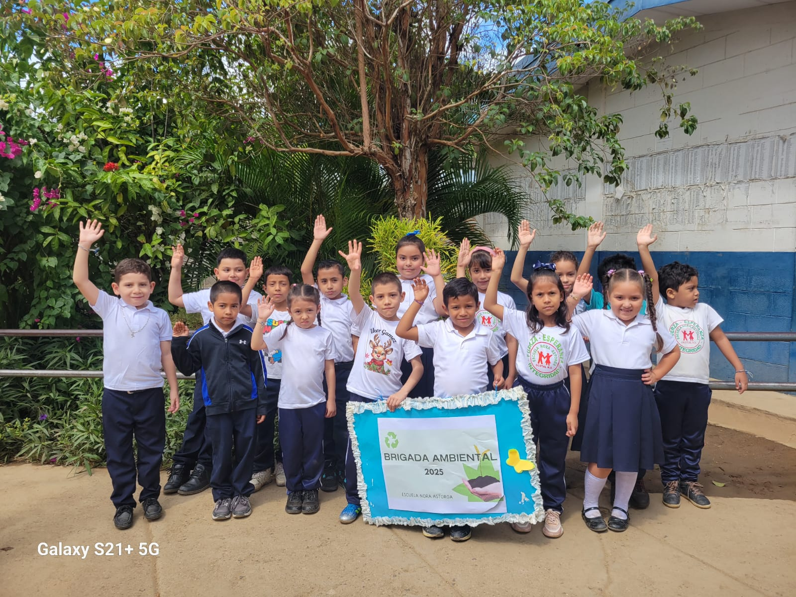
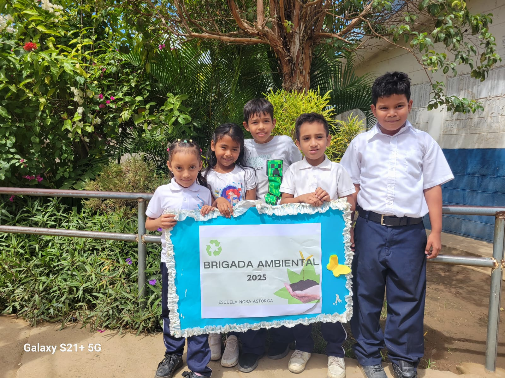

Brigada Ambiental
En Eco Guardianes NORA ASTORGA, la creación de una brigada ambiental para un proyecto escolar busca fomentar la conciencia ecológica y el trabajo en equipo a través de actividades prácticas y educativas. Esta iniciativa involucra a los estudiantes en tareas como el reciclaje, la limpieza de áreas verdes, la siembra de plantas y la promoción de hábitos sostenibles en su escuela y comunidad. Los niños, organizados en pequeños grupos, eligen roles como coordinadores, encargados de materiales o promotores de actividades, lo que les permite desarrollar liderazgo y responsabilidad. Con el apoyo de maestros y padres, la brigada realiza proyectos semanales, como talleres de reutilización o campañas de sensibilización, incentivando el cuidado del medio ambiente de manera divertida y significativa para su edad.
El amor al medioambiente se cultiva en esta brigada al enseñar a los niños la importancia de proteger la naturaleza desde una perspectiva cercana y lúdica. A través de dinámicas como observar la biodiversidad en un parque, crear manualidades con materiales reciclados o aprender sobre el impacto de sus acciones diarias, los estudiantes desarrollan un vínculo emocional con el entorno. Estas experiencias les ayudan a comprender que pequeños gestos, como ahorrar agua o separar residuos, tienen un gran impacto en el planeta. Al compartir sus aprendizajes con sus familias y compañeros, los niños se convierten en pequeños embajadores del cuidado ambiental, inspirando a otros a valorar y respetar la naturaleza.
¡Únete a nuestra brigada ambiental y sé un héroe del planeta mientras te diviertes con tus amigos!
Este proyecto no solo reduce la huella de carbono, sino que también mejora la calidad educativa al permitir el uso de tecnología en el aula. ¡Apóyanos para llevar energía limpia a más escuelas!